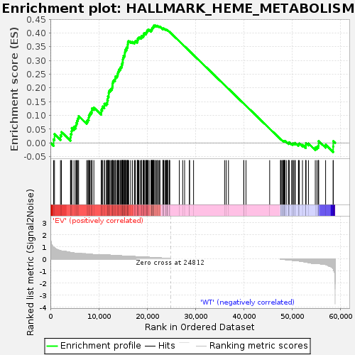
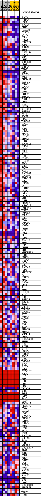
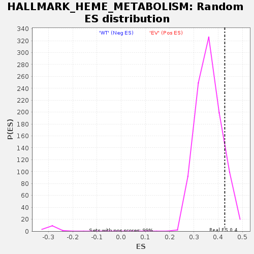

| | | Dataset | EV_WT_express.EV_WT.cls#EV_versus_WT |
| Phenotype | EV_WT.cls#EV_versus_WT |
| Upregulated in class | EV |
| GeneSet | HALLMARK_HEME_METABOLISM |
| Enrichment Score (ES) | 0.42709792 |
| Normalized Enrichment Score (NES) | 1.1817687 |
| Nominal p-value | 0.11347517 |
| FDR q-value | 0.30950233 |
| FWER p-Value | 0.996 |
Table: GSEA Results Summary

Fig 1: Enrichment plot: HALLMARK_HEME_METABOLISM
Profile of the Running ES Score & Positions of GeneSet Members on the Rank Ordered List
| SYMBOL | TITLE | RANK IN GENE LIST | RANK METRIC SCORE | RUNNING ES | CORE ENRICHMENT | | 1 | SLC4A1 | NNN | 657 | 0.973 | 0.0128 | Yes |
| 2 | EPB42 | NNN | 845 | 0.899 | 0.0317 | Yes |
| 3 | UCP2 | NNN | 2081 | 0.665 | 0.0270 | Yes |
| 4 | ABCG2 | NNN | 2281 | 0.648 | 0.0396 | Yes |
| 5 | CTNS | NNN | 4149 | 0.530 | 0.0208 | Yes |
| 6 | FBXO34 | NNN | 4211 | 0.525 | 0.0327 | Yes |
| 7 | IGSF3 | NNN | 4378 | 0.510 | 0.0424 | Yes |
| 8 | GATA1 | NNN | 4412 | 0.507 | 0.0544 | Yes |
| 9 | GCLM | NNN | 4875 | 0.481 | 0.0583 | Yes |
| 10 | YPEL5 | NNN | 5249 | 0.462 | 0.0633 | Yes |
| 11 | CCDC28A | NNN | 5345 | 0.456 | 0.0729 | Yes |
| 12 | AQP3 | NNN | 5540 | 0.453 | 0.0808 | Yes |
| 13 | KHNYN | NNN | 5677 | 0.447 | 0.0895 | Yes |
| 14 | GYPB | NNN | 5834 | 0.441 | 0.0977 | Yes |
| 15 | SLC11A2 | NNN | 7507 | 0.407 | 0.0792 | Yes |
| 16 | MOCOS | NNN | 7746 | 0.397 | 0.0849 | Yes |
| 17 | ACP5 | NNN | 7921 | 0.391 | 0.0915 | Yes |
| 18 | NFE2 | NNN | 7945 | 0.390 | 0.1008 | Yes |
| 19 | ALDH6A1 | NNN | 8139 | 0.382 | 0.1069 | Yes |
| 20 | UROS | NNN | 8377 | 0.370 | 0.1119 | Yes |
| 21 | OSBP2 | NNN | 8564 | 0.363 | 0.1177 | Yes |
| 22 | TFDP2 | NNN | 8603 | 0.362 | 0.1260 | Yes |
| 23 | GYPC | NNN | 8980 | 0.357 | 0.1283 | Yes |
| 24 | BNIP3L | NNN | 10505 | 0.354 | 0.1111 | Yes |
| 25 | ANK1 | NNN | 10522 | 0.353 | 0.1195 | Yes |
| 26 | EIF2AK1 | NNN | 10698 | 0.347 | 0.1251 | Yes |
| 27 | DCAF11 | NNN | 10765 | 0.344 | 0.1324 | Yes |
| 28 | PRDX2 | NNN | 11132 | 0.337 | 0.1345 | Yes |
| 29 | CLCN3 | NNN | 11155 | 0.336 | 0.1424 | Yes |
| 30 | TFRC | NNN | 11536 | 0.325 | 0.1439 | Yes |
| 31 | XPO7 | NNN | 11749 | 0.318 | 0.1481 | Yes |
| 32 | LAMP2 | NNN | 11758 | 0.317 | 0.1558 | Yes |
| 33 | ENDOD1 | NNN | 11869 | 0.314 | 0.1617 | Yes |
| 34 | MBOAT2 | NNN | 11891 | 0.313 | 0.1690 | Yes |
| 35 | CIR1 | NNN | 12045 | 0.309 | 0.1740 | Yes |
| 36 | UBAC1 | NNN | 12049 | 0.309 | 0.1816 | Yes |
| 37 | KAT2B | NNN | 12114 | 0.307 | 0.1880 | Yes |
| 38 | ADIPOR1 | NNN | 12305 | 0.301 | 0.1922 | Yes |
| 39 | RNF19A | NNN | 12510 | 0.297 | 0.1961 | Yes |
| 40 | MXI1 | NNN | 12736 | 0.291 | 0.1994 | Yes |
| 41 | SDCBP | NNN | 12795 | 0.289 | 0.2055 | Yes |
| 42 | FTCD | NNN | 12849 | 0.288 | 0.2117 | Yes |
| 43 | TNRC6B | NNN | 12871 | 0.287 | 0.2184 | Yes |
| 44 | CDC27 | NNN | 12932 | 0.285 | 0.2244 | Yes |
| 45 | CAT | NNN | 13105 | 0.280 | 0.2284 | Yes |
| 46 | ADD1 | NNN | 13340 | 0.275 | 0.2312 | Yes |
| 47 | NUDT4 | NNN | 13412 | 0.273 | 0.2367 | Yes |
| 48 | ATG4A | NNN | 13463 | 0.271 | 0.2425 | Yes |
| 49 | LPIN2 | NNN | 13753 | 0.263 | 0.2441 | Yes |
| 50 | SIDT2 | NNN | 13888 | 0.260 | 0.2482 | Yes |
| 51 | EPB41 | NNN | 13935 | 0.259 | 0.2538 | Yes |
| 52 | SLC7A11 | NNN | 13987 | 0.258 | 0.2592 | Yes |
| 53 | BMP2K | NNN | 14125 | 0.254 | 0.2632 | Yes |
| 54 | CAST | NNN | 14214 | 0.252 | 0.2679 | Yes |
| 55 | RCL1 | NNN | 14456 | 0.249 | 0.2699 | Yes |
| 56 | FOXJ2 | NNN | 14493 | 0.248 | 0.2754 | Yes |
| 57 | EPOR | NNN | 14683 | 0.243 | 0.2781 | Yes |
| 58 | MGST3 | NNN | 14748 | 0.242 | 0.2830 | Yes |
| 59 | FBXO9 | NNN | 14812 | 0.240 | 0.2878 | Yes |
| 60 | FECH | NNN | 14882 | 0.238 | 0.2925 | Yes |
| 61 | NEK7 | NNN | 14958 | 0.236 | 0.2971 | Yes |
| 62 | ISCA1 | NNN | 14963 | 0.236 | 0.3028 | Yes |
| 63 | VEZF1 | NNN | 15003 | 0.235 | 0.3079 | Yes |
| 64 | SLC30A1 | NNN | 15091 | 0.233 | 0.3122 | Yes |
| 65 | SLC10A3 | NNN | 15119 | 0.232 | 0.3175 | Yes |
| 66 | DCUN1D1 | NNN | 15362 | 0.231 | 0.3190 | Yes |
| 67 | GCLC | NNN | 15374 | 0.231 | 0.3245 | Yes |
| 68 | LRP10 | NNN | 15380 | 0.231 | 0.3301 | Yes |
| 69 | NNT | NNN | 15446 | 0.229 | 0.3347 | Yes |
| 70 | ERMAP | NNN | 15499 | 0.228 | 0.3394 | Yes |
| 71 | DAAM1 | NNN | 15704 | 0.223 | 0.3414 | Yes |
| 72 | E2F2 | NNN | 15716 | 0.223 | 0.3467 | Yes |
| 73 | TRIM10 | NNN | 15883 | 0.219 | 0.3493 | Yes |
| 74 | NARF | NNN | 15961 | 0.217 | 0.3533 | Yes |
| 75 | KLF3 | NNN | 15973 | 0.217 | 0.3584 | Yes |
| 76 | PICALM | NNN | 16010 | 0.216 | 0.3631 | Yes |
| 77 | ALDH1L1 | NNN | 16026 | 0.216 | 0.3682 | Yes |
| 78 | RANBP10 | NNN | 16183 | 0.212 | 0.3708 | Yes |
| 79 | TCEA1 | NNN | 16572 | 0.205 | 0.3692 | Yes |
| 80 | RAP1GAP | NNN | 16950 | 0.196 | 0.3676 | Yes |
| 81 | PGLS | NNN | 17354 | 0.186 | 0.3653 | Yes |
| 82 | ELL2 | NNN | 17458 | 0.184 | 0.3680 | Yes |
| 83 | PPOX | NNN | 17559 | 0.181 | 0.3708 | Yes |
| 84 | GAPVD1 | NNN | 17948 | 0.172 | 0.3684 | Yes |
| 85 | NCOA4 | NNN | 17990 | 0.171 | 0.3719 | Yes |
| 86 | FBXO7 | NNN | 18042 | 0.169 | 0.3752 | Yes |
| 87 | NR3C1 | NNN | 18054 | 0.169 | 0.3792 | Yes |
| 88 | TAL1 | NNN | 18144 | 0.167 | 0.3818 | Yes |
| 89 | CA1 | NNN | 18271 | 0.167 | 0.3837 | Yes |
| 90 | KLF1 | NNN | 18533 | 0.164 | 0.3833 | Yes |
| 91 | DCAF10 | NNN | 18790 | 0.160 | 0.3829 | Yes |
| 92 | RIOK3 | NNN | 18838 | 0.159 | 0.3860 | Yes |
| 93 | GMPS | NNN | 18847 | 0.159 | 0.3898 | Yes |
| 94 | MINPP1 | NNN | 19191 | 0.151 | 0.3876 | Yes |
| 95 | BTRC | NNN | 19192 | 0.151 | 0.3913 | Yes |
| 96 | ARHGEF12 | NNN | 19323 | 0.148 | 0.3928 | Yes |
| 97 | EZH1 | NNN | 19328 | 0.148 | 0.3964 | Yes |
| 98 | MFHAS1 | NNN | 19385 | 0.147 | 0.3990 | Yes |
| 99 | TRAK2 | NNN | 19695 | 0.140 | 0.3972 | Yes |
| 100 | DMTN | NNN | 19707 | 0.140 | 0.4005 | Yes |
| 101 | KEL | NNN | 19828 | 0.137 | 0.4018 | Yes |
| 102 | SLC6A8 | NNN | 19917 | 0.135 | 0.4036 | Yes |
| 103 | TOP1 | NNN | 19972 | 0.133 | 0.4059 | Yes |
| 104 | ATP6V0A1 | NNN | 19980 | 0.133 | 0.4091 | Yes |
| 105 | PC | NNN | 20179 | 0.129 | 0.4089 | Yes |
| 106 | CCND3 | NNN | 20181 | 0.129 | 0.4121 | Yes |
| 107 | PIGQ | NNN | 20425 | 0.124 | 0.4110 | Yes |
| 108 | SLC2A1 | NNN | 20789 | 0.117 | 0.4077 | Yes |
| 109 | CTSB | NNN | 20864 | 0.115 | 0.4092 | Yes |
| 110 | XK | NNN | 20870 | 0.115 | 0.4120 | Yes |
| 111 | RBM5 | NNN | 20971 | 0.112 | 0.4130 | Yes |
| 112 | FOXO3 | NNN | 20979 | 0.111 | 0.4156 | Yes |
| 113 | ALAD | NNN | 21043 | 0.110 | 0.4173 | Yes |
| 114 | RHD | NNN | 21083 | 0.109 | 0.4193 | Yes |
| 115 | RNF123 | NNN | 21206 | 0.107 | 0.4198 | Yes |
| 116 | ACSL6 | NNN | 21271 | 0.105 | 0.4213 | Yes |
| 117 | SMOX | NNN | 21346 | 0.104 | 0.4226 | Yes |
| 118 | NFE2L1 | NNN | 21351 | 0.104 | 0.4251 | Yes |
| 119 | TSPAN5 | NNN | 21400 | 0.103 | 0.4268 | Yes |
| 120 | SLC6A9 | NNN | 21622 | 0.097 | 0.4255 | Yes |
| 121 | SPTB | NNN | 21667 | 0.096 | 0.4271 | Yes |
| 122 | MARK3 | NNN | 21905 | 0.091 | 0.4253 | No |
| 123 | TMCC2 | NNN | 22081 | 0.087 | 0.4245 | No |
| 124 | HMBS | NNN | 22097 | 0.087 | 0.4263 | No |
| 125 | BSG | NNN | 22365 | 0.081 | 0.4238 | No |
| 126 | BCAM | NNN | 22589 | 0.075 | 0.4218 | No |
| 127 | RAD23A | NNN | 22618 | 0.075 | 0.4232 | No |
| 128 | HTRA2 | NNN | 23242 | 0.058 | 0.4140 | No |
| 129 | AGPAT4 | NNN | 23275 | 0.057 | 0.4148 | No |
| 130 | MKRN1 | NNN | 23306 | 0.056 | 0.4157 | No |
| 131 | SLC25A38 | NNN | 23359 | 0.054 | 0.4162 | No |
| 132 | RBM38 | NNN | 23376 | 0.054 | 0.4172 | No |
| 133 | RHCE | NNN | 23653 | 0.046 | 0.4136 | No |
| 134 | BLVRB | NNN | 23778 | 0.043 | 0.4126 | No |
| 135 | OPTN | NNN | 23893 | 0.039 | 0.4116 | No |
| 136 | USP15 | NNN | 24009 | 0.036 | 0.4105 | No |
| 137 | PSMD9 | NNN | 24101 | 0.033 | 0.4098 | No |
| 138 | BACH1 | NNN | 24125 | 0.032 | 0.4102 | No |
| 139 | UROD | NNN | 24131 | 0.032 | 0.4109 | No |
| 140 | TMEM9B | NNN | 24323 | 0.025 | 0.4082 | No |
| 141 | BPGM | NNN | 24583 | 0.014 | 0.4042 | No |
| 142 | BLVRA | NNN | 24610 | 0.013 | 0.4040 | No |
| 143 | GDE1 | NNN | 24656 | 0.010 | 0.4035 | No |
| 144 | PDZK1IP1 | NNN | 26638 | 0.000 | 0.3697 | No |
| 145 | ACKR1 | NNN | 27335 | 0.000 | 0.3579 | No |
| 146 | HBZ | NNN | 27732 | 0.000 | 0.3511 | No |
| 147 | HBD | NNN | 28739 | 0.000 | 0.3340 | No |
| 148 | HBBP1 | NNN | 28740 | 0.000 | 0.3340 | No |
| 149 | TYR | NNN | 29582 | 0.000 | 0.3196 | No |
| 150 | CTSE | NNN | 35999 | 0.000 | 0.2102 | No |
| 151 | TRIM58 | NNN | 36321 | 0.000 | 0.2047 | No |
| 152 | ADD2 | NNN | 36794 | 0.000 | 0.1967 | No |
| 153 | GYPE | NNN | 39965 | 0.000 | 0.1426 | No |
| 154 | GYPA | NNN | 39968 | 0.000 | 0.1426 | No |
| 155 | RHAG | NNN | 40416 | 0.000 | 0.1350 | No |
| 156 | ICAM4 | NNN | 45312 | 0.000 | 0.0515 | No |
| 157 | SEC14L1 | NNN | 47561 | -0.006 | 0.0133 | No |
| 158 | HTATIP2 | NNN | 47575 | -0.007 | 0.0133 | No |
| 159 | CPOX | NNN | 47708 | -0.015 | 0.0114 | No |
| 160 | CLIC2 | NNN | 47967 | -0.029 | 0.0077 | No |
| 161 | HDGF | NNN | 48085 | -0.035 | 0.0066 | No |
| 162 | CROCCP2 | NNN | 48105 | -0.036 | 0.0071 | No |
| 163 | MAP2K3 | NNN | 48163 | -0.039 | 0.0071 | No |
| 164 | KDM7A | NNN | 48324 | -0.046 | 0.0055 | No |
| 165 | GLRX5 | NNN | 48361 | -0.048 | 0.0061 | No |
| 166 | MPP1 | NNN | 48451 | -0.051 | 0.0058 | No |
| 167 | TNS1 | NNN | 48501 | -0.053 | 0.0063 | No |
| 168 | SPTA1 | NNN | 48821 | -0.068 | 0.0025 | No |
| 169 | SNCA | NNN | 49220 | -0.085 | -0.0022 | No |
| 170 | SLC22A4 | NNN | 49239 | -0.085 | -0.0004 | No |
| 171 | SELENBP1 | NNN | 49250 | -0.086 | 0.0016 | No |
| 172 | FN3K | NNN | 49346 | -0.090 | 0.0022 | No |
| 173 | HEBP1 | NNN | 49835 | -0.111 | -0.0034 | No |
| 174 | ARL2BP | NNN | 50073 | -0.121 | -0.0045 | No |
| 175 | SLC25A37 | NNN | 50101 | -0.122 | -0.0020 | No |
| 176 | BTG2 | NNN | 50313 | -0.130 | -0.0024 | No |
| 177 | ASNS | NNN | 50560 | -0.143 | -0.0030 | No |
| 178 | CDR2 | NNN | 50591 | -0.145 | 0.0000 | No |
| 179 | MYL4 | NNN | 51250 | -0.167 | -0.0071 | No |
| 180 | P4HA2 | NNN | 51297 | -0.167 | -0.0038 | No |
| 181 | CA2 | NNN | 51434 | -0.176 | -0.0018 | No |
| 182 | MOSPD1 | NNN | 52089 | -0.222 | -0.0075 | No |
| 183 | HAGH | NNN | 52768 | -0.255 | -0.0127 | No |
| 184 | ABCB6 | NNN | 52785 | -0.257 | -0.0067 | No |
| 185 | SYNJ1 | NNN | 52806 | -0.259 | -0.0007 | No |
| 186 | ALAS2 | NNN | 53324 | -0.301 | -0.0021 | No |
| 187 | HBB | NNN | 54738 | -0.357 | -0.0174 | No |
| 188 | AHSP | NNN | 55077 | -0.357 | -0.0143 | No |
| 189 | LMO2 | NNN | 55356 | -0.360 | -0.0102 | No |
| 190 | SLC30A10 | NNN | 55420 | -0.364 | -0.0023 | No |
| 191 | PPP2R5B | NNN | 55421 | -0.364 | 0.0067 | No |
| 192 | C3 | NNN | 56870 | -0.459 | -0.0067 | No |
| 193 | TSPO2 | NNN | 58430 | -0.805 | -0.0135 | No |
| 194 | HBQ1 | NNN | 58451 | -0.824 | 0.0064 | No |
Table: GSEA details [plain text format]

Fig 2: HALLMARK_HEME_METABOLISM
Blue-Pink O' Gram in the Space of the Analyzed GeneSet

Fig 3: HALLMARK_HEME_METABOLISM: Random ES distribution
Gene set null distribution of ES for HALLMARK_HEME_METABOLISM